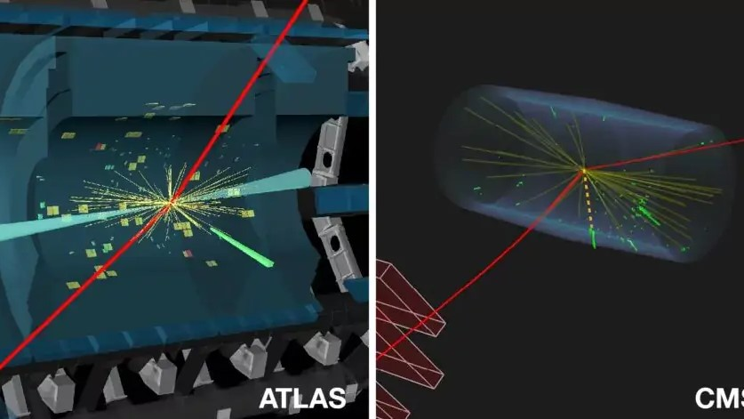
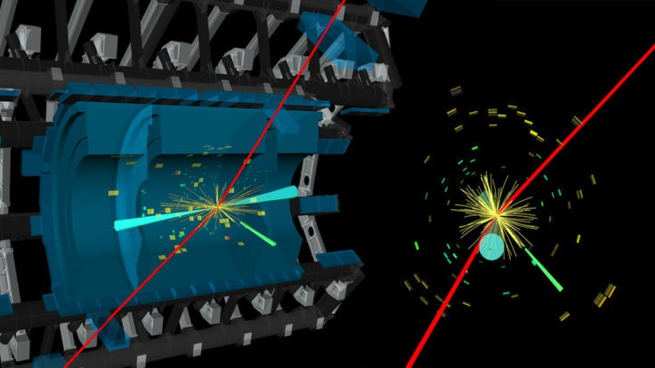

-РАСПАД БОЗОНА ХИГСА-
Редкий распад бозона Хигса
-
ЭВ мае 2023 года исследователи ЦЕРН заявили, что впервые наблюдали распад бозона Хиггса не на пару b-кварк-b-антикварк, или на пару фотонов, или на две пары электрон-позитрон (антиэлектрон) и/или мюон-антимюон (как это происходит обычно), а на Z-бозон и фотон.Используя данные о столкновениях на Большом адронном коллайдере, физики ATLAS и CMS провели обширные поиски распада бозона Хиггса на Z-бозон и фотон. Оба поиска использовали схожие стратегии, идентифицируя Z–бозон по его распаду на пары электронов или мюоны – более тяжелые версии электронов. Эти распады Z-бозона происходят примерно в 6,6% случаев. В ходе поисков физики также использовали передовые методы машинного обучения.В новом исследовании ATLAS и CMS объединили наборы данных, собранные в ходе ранее проведенных экспериментов во время второго запуска БАК, который состоялся в период с 2015 по 2018 год. Результатом совместных усилий стало первое свидетельство распада бозона Хиггса на Z-бозон и фотон.

Как физика частиц влияет на нашу жизнь?
Поразительно, но открытие бозона Хиггса является лишь началом пути. Исследователи надеются, что в будущем смогут понять, является ли частица Бога единственной в своем роде, может ли она объяснить как образовалась Вселенная и когда материя восторжествовала над антивеществом. Более того, изучая свойства и распад бозона Хиггса, физики, возможно, смогут обнаржить новые частицы и даже таинственную темную материю.
Но вот что удивительно – бозон Хиггса оказывает и будет продолжать оказывать влияние на нашу жизнь, причем так, как вы, возможно, и не представляли. Это часть ответа на вопрос, почему мы – и все, с чем мы взаимодействуем – обладаем массой, испытываем любопытство к устройству Вселенной и ее эволюции.
